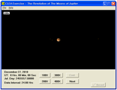
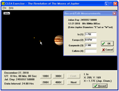
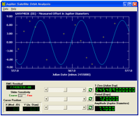

General Earth Science Lab Experiment 1
Kepler’s 3rd law
ID Number | Name |
| Date | Score |
Objectives
l To understand the Kepler’s laws about planetary orbital motion.
l To determine the Jupiter’s mass using Kepler’s third law.
Introduction
In the 16th century, Copernicus led a revolution in our thinking about the basic model of the Solar System. Thereafter, with a few notable exceptions(like Tycho Brahe), the scientific world adopted heliocentric models. However, the Copernican models did not include significant improvements other than the basic change in philosophy about whether the Earth or the Sun was the center. Science still did not know much about the details of planetary orbits until Kepler advanced hit three law. There are as follows.
Law 1 The orbits of planets are in the shapes of ellipses with the Sun located at one focus. The equation of an ellipse is r = [a(1-e2)] / (1+e cos𝜃) .
Law 2 The radius vector (imaginary line joining the Sun to an object) of a planet sweeps out equal area in equal times.
Law 3 (Know also as the Harmonic Law) The orbital periods of the planets form a precise relationship with the sizes of their orbits. Specifically, p2 = a3, where p and a are the periods(in Earth years) and average distance (in astronomical units; the mean distance of the Earth from the Sun is defined as 1.0 au).
By the end of the 17th century, the motion of bodies on Earth and in the Solar System was well understood. Progress came primarily from Newton who cast earlier results from Galileo into more rigorous form and added the law of relations, the law of gravitation, and the calculus(along with Leibnitz). And later, Newton applied his laws to generalize from the Kepler’s third law that two objects orbiting each other satisfy the following law.
p2 = 4𝛑2a3 / G(m1+m2)
Here, G is the gravitational constant; m1 and m2 are the gravitational masses of the two bodies.
Materials: Notebook, CLEA program(The revolution of the moons of Jupiter)
Procedure
<Galileansatellites>
Name | Orbital radius (km) | Orbital period (days) |
Io | 421,700 | 1.77 |
Europa | 671,034 | 3.55 |
Ganymede | 1,070,412 | 7.16 |
Callisto | 1,882,709 | 16.69 |
Solar Mass : M◉ = 1.99 × 1030kg
Jupiter Mass : MJ= 1.89 × 1027kg
1 AU = 1.5 × 108km
Procedure | Explanation | ||||
| ① Start up the Jupiter’s Moons lab ; click icon, then select Log in from the File menu. Enter your name and table number in the dialogue box that appears and select OK. ② Select File-Run ; when the next window pops up, simply select OK to accept the defaults for the Start Date&Time. | ||||
 | ③ Now the window pictured blow appears, Jupiter appears in the center of the screen, while the small point-like moons are on either side. ④ Yon can display the screen at four levels of magnification by clicking on the 100X, 200X, 300X and 400X buttons. ⑤ Put the cursor on each moon and left-click. This puts the name of the moon in X and Y coordinates of its in pixels on your screen and its X coordinate as expressed in diameters of Jupiter(Jup.Diam) to the east or west of the planet’s center. | ||||
 | ⑥ After clicking on the first moon then click on the RECORD button. This will bring up the ‘Record/Edit Measurements’ window with your value recorded for the first moon. Click OK in this window. Next click on other moons then click on the RECORD button. ⑦ After recording all moons, then click OK button and quit. And click the NEXT button to take you to the next day. And continue for 30 observations. You should use File-Data-Save-CSV Format to save your data. | ||||
 | ⑧ Select File-Data-Analyze and then choose one moon from the menu. ⑨ Next select Data-Plot-Fit Sine Curve-Set Initial Parameters. Input the initial parameters. You should see a sine curve that matches your plotted points quite well. Use the scroll arrows to make the RMS Residual number as small as possible. ⑩ Repeat the steps above ⑨~⑩ to find the PERIOD and AMPLITUDE of all moons. |
**Note : The final sine-curve-fit graphs of all moons must be included in the report.
<Io sine-curve-fit graph>
<Europa sine-curve-fit graph>
<Ganymede sine-curve-fit graph>
<Callisto sine-curve-fit graph>
Io | Europa | Ganymede | Callisto | ||
Fitting Curve | Amplitude | 2.972 | 4.699 | 7.486 | 13.19 |
RMS Residual | 0.1407 | 7.400E-02 | 0.1443 | 0.1599 | |
moon’s orbital period | P(day) | 1.769 | 3.549 | 7.132 | 16.73 |
P(year) | 4.847E-03 | 9.723E-03 | 1.954E-02 | 4.584E-02 | |
P2(year2) | 2.349E-05 | 9.454E-05 | 3.818E-04 | 2.101E-03 | |
moon’s orbital radius | a (Jupiter Diameter) | 2.972 | 4.699 | 7.486 | 13.19 |
a(AU) | 0.0028 | 0.0044 | 0.0070 | 0.0123 | |
a3(AU3) | 2.146E-08 | 8.484E-08 | 3.430E-07 | 1.876E-06 | |
Jupiter’s Mass | M⊙ | 9.138E-04 | 8.974E-04 | 8.984E-04 | 8.931E-04 |
kg | 1.817E+27 | 1.784E+27 | 1.786E+27 | 1.775E+27 | |
Error | % | -4.287 | -6.009 | -5.896 | -6.455 |
(1) Which moon do you think would cause the largest error? And why?
위 결과를 보면 알 수 있듯, Callisto가 error가 가장 클 것이며, 도는 궤도가 작아질수록 오차가 줄어들 것 같다.
우선 오차의 원인으로 식의 계산에서 뽑을 수 있는 것은 목성의 질량과 위성의 질량의 합을 목성의 질량으로 근사한 것이 있는데, 이는 모든 위성에 대하여 큰 오차를 불러일으키지 않을 값으로 판단했다. 또한, 내가 위성에 클릭할 때 생기는 오차가 있을 것이다. 이 관점에서 Io는 공전 반지름이 작아 마우스로 클릭하기 쉬워 정확도가 높을 것이지만 Callisto는 공전 반지름이 커 마우스로 클릭할 때 배율을 낮추고 클릭해야 하므로 정확도가 낮을 것이다. 마지막으로, sin 그래프를 fitting할 때 생기는 오차가 있을 것이다. 이 관점에서 Io는 여러 주기에 걸쳐있어 sin그래프를 정확하게 fitting하지 않아도 주기로 나누어지게 돼서 큰 오차가 생기지 않을 것이지만, Callisto는 적은 주기에 걸쳐있어 fitting할 때 생기는 오차가 클 것이다.
(2) The orbit of Earth’s moon has a period of 27.3 days and a radius of 2.56 x 10-3AU(=3.84 x 105 km). What is the mass of Earth? What are the units?
수업 시간에 배운 Two-Body에 관한 식을 사용해보자. 하지만 달의 질량은 지구의 질량에 영향을 미칠 수 있기에 로 근사를 하지는 않도록 하겠다.
P값은 약 27.32일, 즉 2360448sec 이다.
이를 위에 식에다 대입하면
다음 방정식이 나오고, 지구의 질량을 계산한다면 이 나오게 된다.
Discussions
Explorer 35 was a spin-stabilized spacecraft instrumented for interplanetary studies, at lunar distances, of the interplanetary plasma, magnetic field, energetic particles, and solar X rays. It was launched on July 19, 1967 and entered an elliptical lunar orbit on July 22. After successful operation for 6 years, the spacecraft was turned off on June 24, 1973.
The next table shows the location data on the elliptical orbit for the Moon in Explorer 35. The time interval is 15 minutes and the unit of length is the radius of the moon. The moon lies at the center of the coordinate system.
Time | X(Lunar Radii) | Y(Lunar Radii) | Time | X(Lunar Radii) | Y(Lunar Radii) |
0h 00m | -3.62 | 1.04 | 6h 00m | -0.27 | 4.86 |
0h 15m | -3.46 | 0.63 | 6h 15m | -0.56 | 4.95 |
0h 30m | -3.25 | 0.20 | 6h 30m | -0.84 | 5.01 |
0h 45m | -2.97 | -0.22 | 6h 45m | -1.12 | 5.03 |
1h 00m | -2.60 | -0.65 | 7h 00m | -1.38 | 5.04 |
1h 15m | -2.14 | -1.03 | 7h 15m | -1.64 | 5.00 |
1h 30m | -1.55 | -1.37 | 7h 30m | -1.89 | 4.95 |
1h 45m | -0.85 | -1.58 | 7h 45m | -2.14 | 4.87 |
2h 00m | -0.03 | -1.59 | 8h 00m | -2.37 | 4.77 |
2h 15m | +0.78 | -1.32 | 8h 15m | -2.59 | 4.65 |
2h 30m | 1.45 | -0.79 | 8h 30m | -2.80 | 4.50 |
2h 45m | 1.87 | -0.11 | 8h 45m | -2.99 | 4.33 |
3h 00m | 2.09 | +0.58 | 9h 00m | -3.17 | 4.14 |
3h 15m | 2.16 | 1.22 | 9h 15m | -3.33 | 3.93 |
3h 30m | 2.11 | 1.82 | 9h 30m | -3.49 | 3.69 |
3h 45m | 1.99 | 2.35 | 9h 45m | -3.59 | 3.42 |
4h 00m | 1.82 | 2.81 | 10h 00m | -3.69 | 3.15 |
4h 15m | 1.61 | 3.22 | 10h 15m | -3.77 | 2.85 |
4h 30m | 1.37 | 3.59 | 10h 30m | -3.81 | 2.52 |
4h 45m | 1.11 | 3.90 | 10h 45m | -3.83 | 2.20 |
5h 00m | 0.85 | 4.16 | 11h 00m | -3.81 | 1.83 |
5h 15m | 0.58 | 4.40 | 11h 15m | -3.76 | 1.46 |
5h 30m | 0.28 | 4.58 | 11h 30m | -3.65 | 1.06 |
5h 45m | 0.00 | 4.74 | 11h 45m | -3.51 | 0.65 |
(1) Using the data, draw the orbit of the spacecraft to the moon on the graph paper, and determine the long axis and focus, and also prove Kepler's first law.
그래프가 다음과 같이 나오는 것을 확인 할 수 있다. 마지막 그래프는 장반경과 초점을 표시한 것이다.
또한, 위 자료에서는 궤도는 타원을 그리고, 지구는 하나의 초점에 있음으로 (0,0) 케플러 제 1법칙이 증명되었다고 할 수 있다. 이를 바탕으로 물리적으로 케플러 법칙을 증명해 보자.
케플러 법칙 증명

(2) Determine the major radius, minor axis, minor radius, eccentricity, and orbital period.
타원을 근사하기 위해서는 가장 많이 사용하는 방법인 Least Squares Method를 사용할 것이다.
Least Squares Method란 의 값을 최소화하는 방법이다. 이 코드에서는 numpy module에 있는 lstsq 함수를 사용하였다.
다음 코드를 사용하여 Least squares problem을 풀어 eliptical fitting을 하면 다음 식이 나오게 된다.
울프럼 알파를 이용해 타원의 성질을 알아보면 다음과 같다.
또한, 주기는 표로부터 약 11시간 30분마다 반복되는 것을 알 수 있다
따라서
major radius (Lunar radii) | minor radius (Lunar radii) | eccentricity | orbital period (hour) |
3.428 | 2.863 | 0.5499 | 11.5 |
(3) Find the mass of the moon in kg using Kepler's third law. Here, the radius of the moon is 1,738 km.
위의 문제에서 구한 값을 이용하여 달의 질량을 구하면
이는 잘 알려진 값인 과 비교하여 오차율 0.65%로 높은 정확도를 보여 준다.